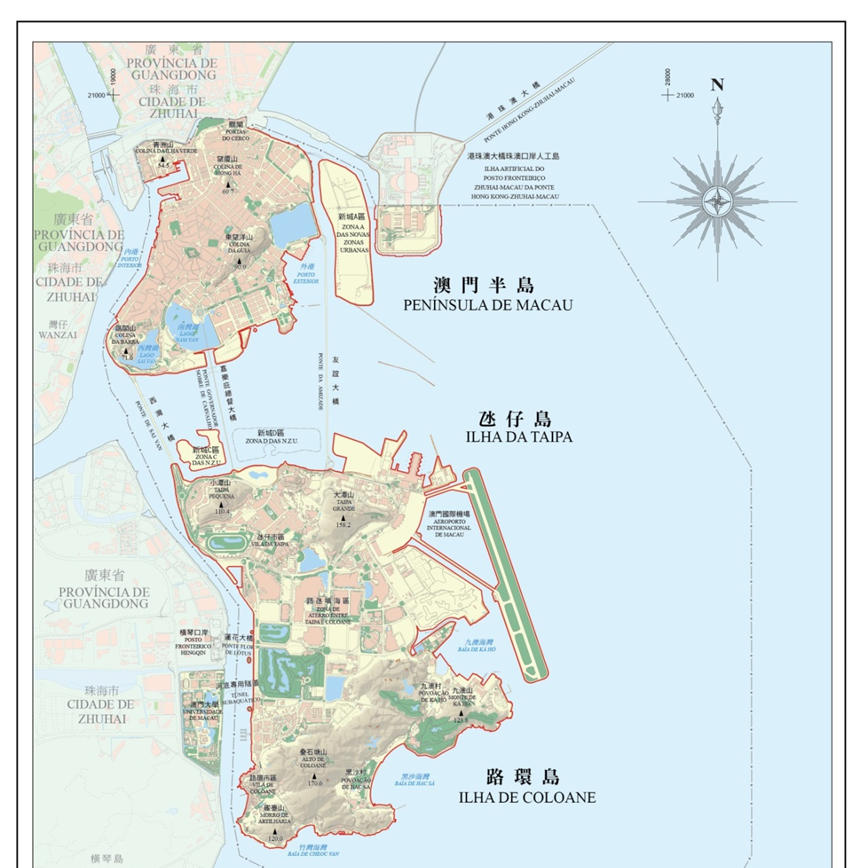
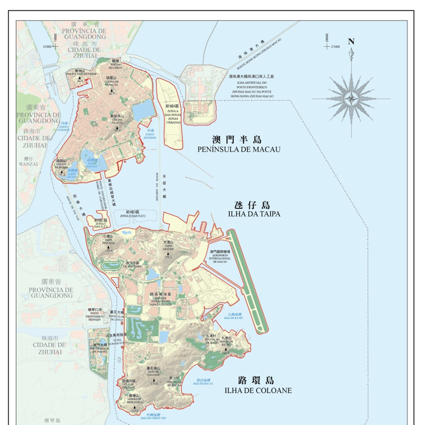

項目內容
本項目針對澳門地區長期性的和大規模的圍填海對海域空間資源、環境生態健康及風暴潮致災等可能產生的影響，從珠江河口三角洲發育演變與河口入海物質擴散等全域角度,聚焦澳門典型河口海岸帶和城市海岸帶變化，開展陸海統籌空間利用的關鍵技術研究；在系統研究海岸帶發育演變規律和空間變化特徵基礎上，結合海岸帶保護利用現狀、新空間拓展及多元發展需求，提出海岸帶臨界空間結構以及其功能優化，為澳門集約利用海域資源、保護海岸帶生態環境等提供科學依據，也為國家海岸帶空間規劃提供借鑒。
本項目針對澳門地區長期性的和大規模的圍填海對海域空間資源、環境生態健康及風暴潮致災等可能產生的影響，從珠江河口三角洲發育演變與河口入海物質擴散等全域角度,聚焦澳門典型河口海岸帶和城市海岸帶變化，開展陸海統籌空間利用的關鍵技術研究；在系統研究海岸帶發育演變規律和空間變化特徵基礎上，結合海岸帶保護利用現狀、新空間拓展及多元發展需求，提出海岸帶臨界空間結構以及其功能優化，為澳門集約利用海域資源、保護海岸帶生態環境等提供科學依據，也為國家海岸帶空間規劃提供借鑒。
